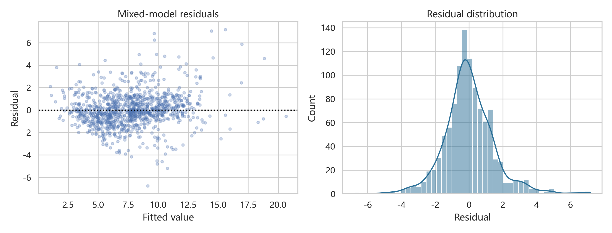
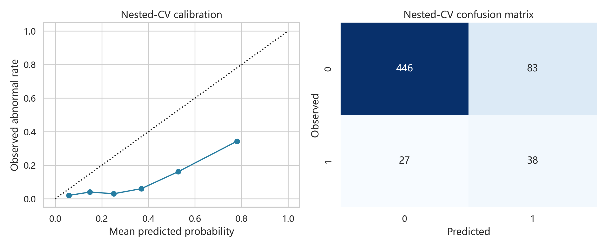

01 / MODEL
从重复测量到混合效应模型
识别同一孕妇多次检测的相关性，以随机截距模型替代错误的独立样本假设。
0.743
ICC · 个体内相关

REAL PROJECT · FULL LOOP · NO MOCK DATA
用户只选择题目。Agent 读取赛题与数据，建立 Roadmap，完成建模和论文，再按评审逻辑自审、补强并交付。
用 Competition Agent 完成 2025 全国大学生数学建模竞赛 C 题，并形成可提交论文。
Demo 将按真实项目过程依次运行。每一步都对应可检查的文件、数据或判断。
THE EVIDENCE, NOT THE CLAIM
不是“AI 建议你怎么做”，而是 Agent 已经执行、验收并留下可复现证据。
识别同一孕妇多次检测的相关性，以随机截距模型替代错误的独立样本假设。

将首次达标表达为左删失、区间删失与右删失，在 80% 可靠性约束下求最早时点。
多因素模型并未带来更高的患者级交叉验证性能，因此保留更稳健的 BMI 基线。

少数类权重、分组交叉验证、阈值选择、校准、混淆矩阵和 Bootstrap 区间形成闭环。
JUDGE DOES NOT FLATTER
当前版本达到可提交状态。主模型、误差、稳健性、验证和执行边界均已明确。
早期分布不可完全识别218 名孕妇属于左删失。
高 BMI 组不确定性较大仅 49 人，时点区间 16.25–24 周。
模型不能替代临床诊断异常样本仅 65 条，只用于复核排序。
一次真实任务，完成 Goal → Deliver 全闭环。
重新观看 Demo